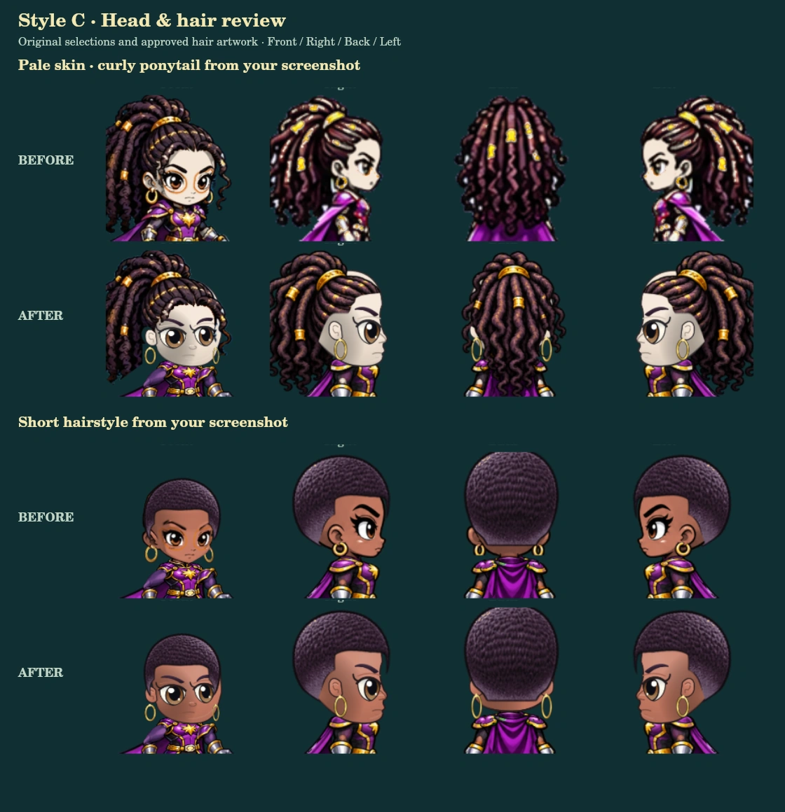
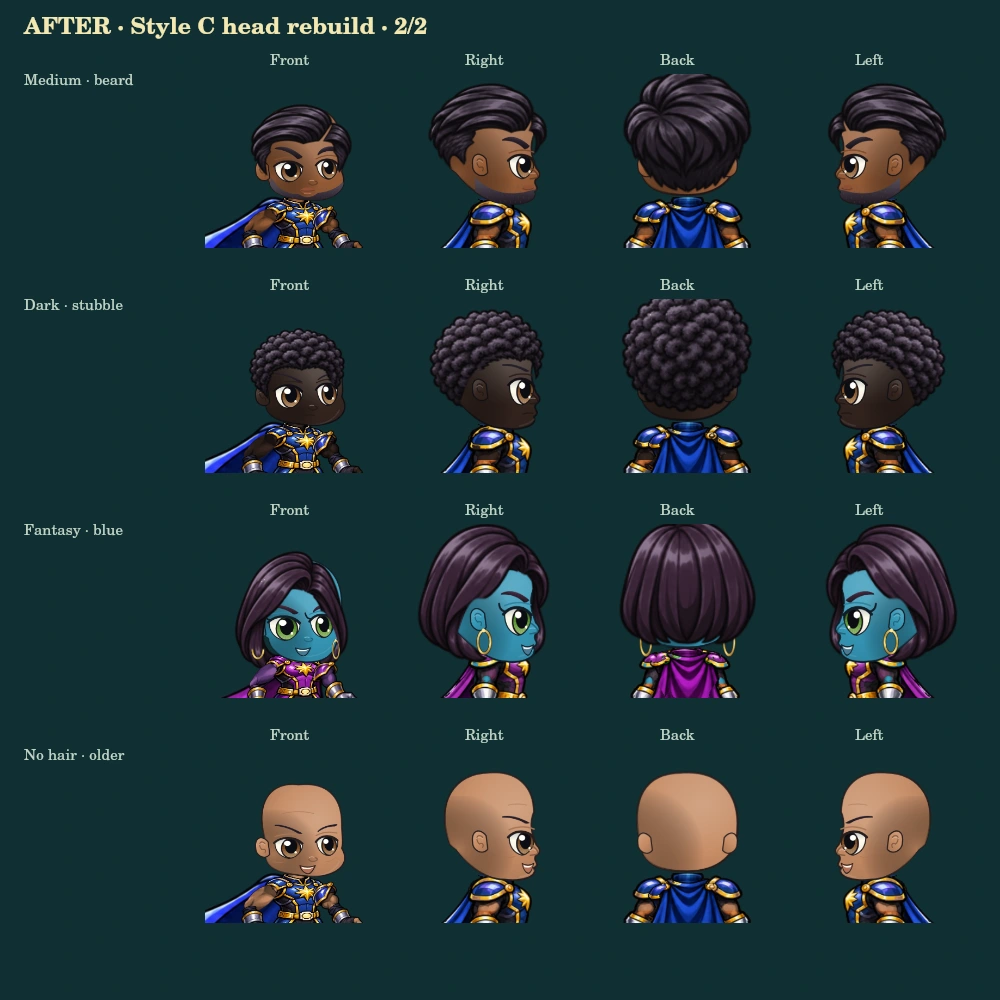

Loading original Style C artwork…
These are preview characters. This page does not read or write player accounts, inventories, or saves. The official game still uses the approved heads.
Before & after · screenshot examples

More skin tones & facial selections
